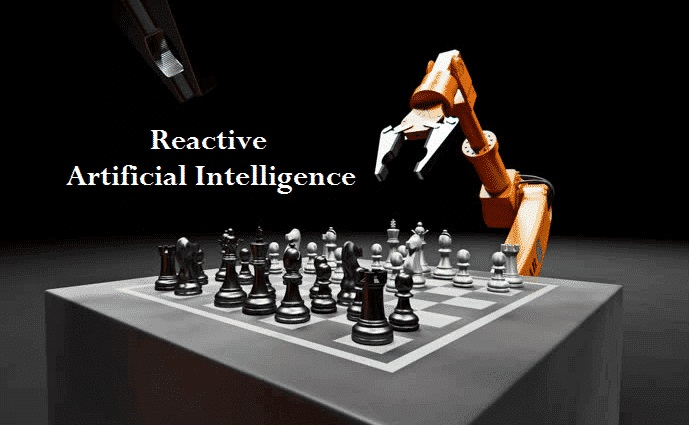
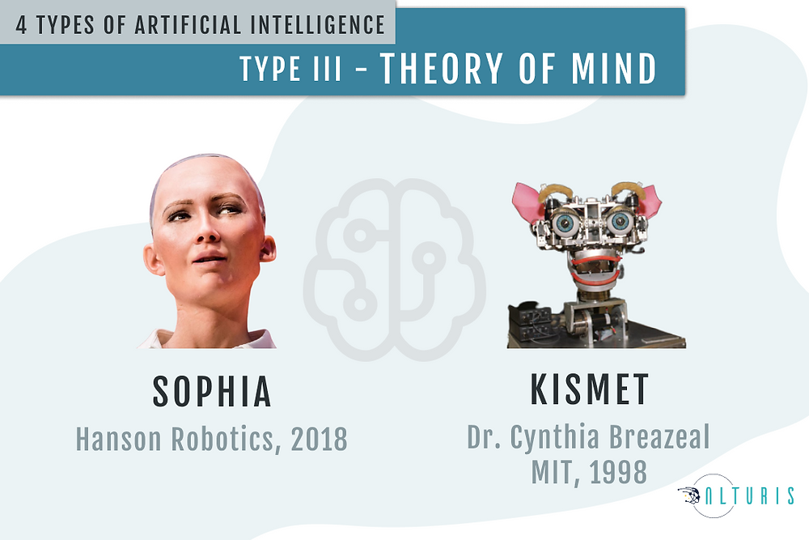

Welcome to
the World of AI
Artificial intelligence is the simulation of human
intelligence processes by machines,
especially computer systems.
Specific applications of AI include expert systems,
natural language processing, speech recognition
and machine vision.
 - Made with Clipchamp.gif)
ARTIFICIAL INTELLIGENCE DEFINED :
FOUR TYPES OF APPROACHES
• Thinking humanly: mimicking thought based
on the human mind.
• Thinking rationally: mimicking thought based
on logical reasoning.
• Acting humanly: acting in a manner that mimics
human behavior.
• Acting rationally: acting in a manner that is
meant to achieve a particular goal.
AI can perform tasks
better than humans.Particularly
when it comes to repetitive,detail-
oriented tasks like analyzing large
numbers of legal documents to
ensure relevant fields are filled
properly,AI tools often complete jobs
quickly and with relatively
few errors.
Most AI examples
that you hear about today from
chess playing computer to self-
driving cars rely heavily on deep
learning and natural language processing.
Using these technologie,computers can be
trained to accomplish specific tasks by
processing large amounts of data
and recognizing patterns
in the data.
This aspect of AI
programming focuse on acquiring
data & creating rules for how to turn
the data into actionable info.The rules
which are called algorithms,provide
computing devices with step-by-
step instructions for how to
complete a specific task.
History of Artificial Intelligence
The term artificial intelligence was coined in 1956,
but AI has become more popular today thanks to increased
data volumes, advanced algorithms, and improvements in
computing power and storage.
In the 1960s, the US Department of Defense took
interest in this type of work and began training computers to
mimic basic human reasoning. For example, the Defense
Advanced Research Projects Agency (DARPA) completed street
mapping projects in the 1970s. And DARPA produced intelligent
personal assistants in 2003, long before Siri, Alexa or Cortana
were household names.

Types of ARTIFICIAL Intelligence

Reactive AI
These AI systems
have no memory and are
task specific. An example
is Deep Blue, the IBM chess
program that beat Garry
Kasparov in the 1990.Deep Blue
can identify pieces on chess-
board and make predictions,but
because it has no memory, it
can't use past experience to
inform future ones.
Limited memory AI
These AI systems have
memory, so they can use
past experiences to inform
future decisions. Some of the
decision-making functions in
self-driving cars are designed
this way

Theory of mind AI
Theory of mind is a psych-
ology term. When applied to
AI, it means that the system
would have the social intelli-
gence to understand emotions.
This type of AI will be able to
infer human intentions and
predict behavior, a necessary
skill for AI system to be an
integral members of
human teams.
Applications of AI
AI in healthcare. The biggest bets are on improving patient outcomes and reducing costs. Companies are applying machine learning to make better and faster diagnoses than humans. One of the best-known healthcare technologies is IBM Watson. It understands natural language and can respond to questions asked of it. The system mines patient data and other available data sources to form a hypothesis, which it then presents with a confidence scoring schema. Other AI applications include using online virtual health assistants and chatbots to help patients and healthcare customers find medical information, schedule appointments, understand the billing process and complete other administrative processes. An array of AI technologies is also being used to predict, fight and understand pandemics such as COVID-19.
AI in business. Machine learning algorithms are being integrated into analytics and customer relationship management (CRM) platforms to uncover information on how to better serve customers. Chatbots have been incorporated into websites to provide immediate service to customers. Automation of job positions has also become a talking point among academics and IT analysts.
AI in manufacturing. Manufacturing has been at the forefront of incorporating robots into the workflow. For example, the industrial robots that were at one time programmed to perform single tasks and separated from human workers, increasingly function as cobots: Smaller, multitasking robots that collaborate with humans and take on responsibility for more parts of the job in warehouses, factory floors and other workspaces.